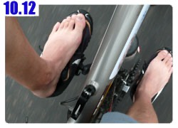
今天，十月十二日，距離抵達BTP的終點－巴黎，正好一個月的時間，休息很足夠了。
HALO3全破、蜘蛛人三也如願以償的看完、每天都過著睡到自然醒的生活，愜意無比。
BTP的旅行在巴黎劃下句點，台灣環島就當是附加行程，走過歐亞大陸之後，想重新體驗一下台灣的美麗。
上次環島是四年前的事情，點點滴滴都還記在心頭，這次換了一台新相機、一輛酷單車、換個視野再走它一回。
環島出發的日期，就選在颱風剛走的後兩天，一整個夏天都不在台灣，想不到還是有機會可以遇到颱風。
裝備則比BTP精簡很多，爐具那些就不帶了，我還是比較適合吃別人煮的。
露營設備還是有帶，但是睡袋就放家裡，十月中旬，台灣的溫度日間居然還是有二十五度，真是相當的熱。
從法國一回來，額頭就直冒汗，跟歐洲比起來，整整高了將近十五度，所以睡袋就不需要了。
基本上只帶了電腦、相機、衣服、帳棚、睡墊、iPod、GPS，這些都是BTP時的裝備，直接拿出來用就好。
但是有加入一個新的玩具，太陽能充電板，可惜這陣子是陰天，想測試也沒辦法，希望太陽有露臉的機會。
拿出BTP的包包來裝，這些行李加一加，連兩個包包都裝不滿，而且還是掛在前面的小包包，負重大幅降低。
要陪著我環島的單車，則換了一輛，跑了一萬多公里的小多這次暫時休息，換了一輛拍過電影的絕版車。
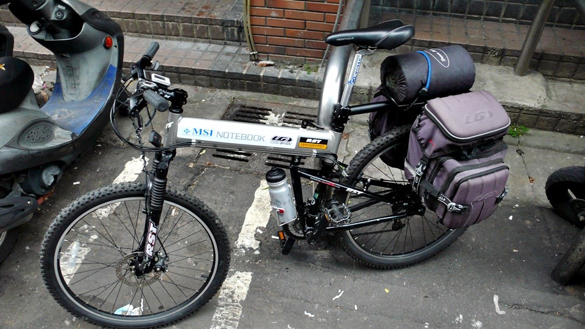
如果你有看過電影『刺青』，那你也許會注意到竹子－梁洛施，在電影裡面騎的就是這一輛車 :D
是真的就是這一輛喔，不是拿同款車來矇混那麼簡單，有機會騎這輛車的男生，大概這輩子就不想洗屁股了吧。
這台不是旅行車，所以沒有貨架，手動加上一個之後才有辦法掛包包，上頭再綁一個睡墊，環島跟BTP比起來真是輕鬆的像要去郊遊一樣。
車頭部份則完全是空的，所以轉彎的時候，龍頭很輕巧，爬坡的時候也因為行李負重不多，所以還蠻輕鬆的。
空空的車頭一開始還有點不習慣，手把上掛了三個東西，碼表、手錶跟GPS。
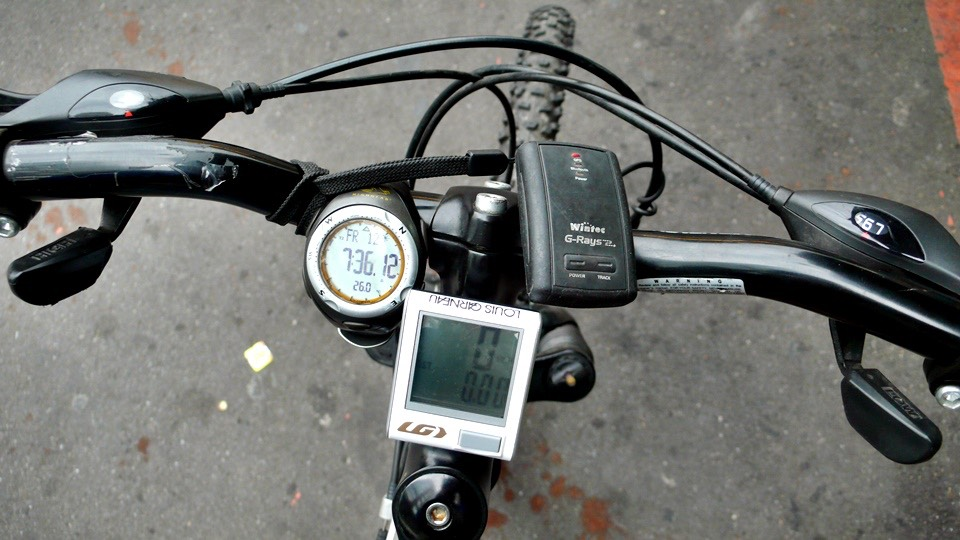
GPS早上開機要定位的時候，花了十幾分鐘都還沒辦法定位，上次使用是在巴黎，現在回到台灣了，機器需要一點時間找出目前所在地。
現在台灣天黑的時間超早的，大概下午五點半的時候就快不行了，為了要把握騎車的時間，所以計畫天一亮立刻出發。
可惜自然醒的睡眠睡習慣了，早上還是賴床了一下，八點整的時候才開始騎車，正好遇上尖峰塞車時刻。
環島的路線基本上是動態的，除了要騎回家之外，路線完全沒有計畫，今天則打算先橫越台北市，到基隆去吃早午餐。
然後繞過整個北海岸，騎到新竹自己租的房子，講起來是很簡單，可惜我不知道這段路一點也沒有我想像的那麼短。
休息了一個月沒騎車，第一天環島應該安排個暖身行程，結果第一天馬上就來一個兩百公里的長距離考驗，屁股騎到超痛。
橫跨台北市還蠻簡單的，先從新莊騎進市區，然後找到忠孝東路，騎到底之後就是汐止，接上台五線就可以抵達基隆。
這段路在我剛買腳踏車－FCR1的時候，放假偶爾就會騎去基隆，來回八十公里的路，只為了去買營養三明治吃。
憑著腦海中的印象，去基隆這段路是不可能迷路的，北海岸就沒走過，等到了基隆再想辦法吧。
橫跨台北的路上經過中正紀念堂，今天的天空很陰，怎麼看都是下雨的天氣，可是手錶預報說是晴天，所以我就沒帶雨衣出門。
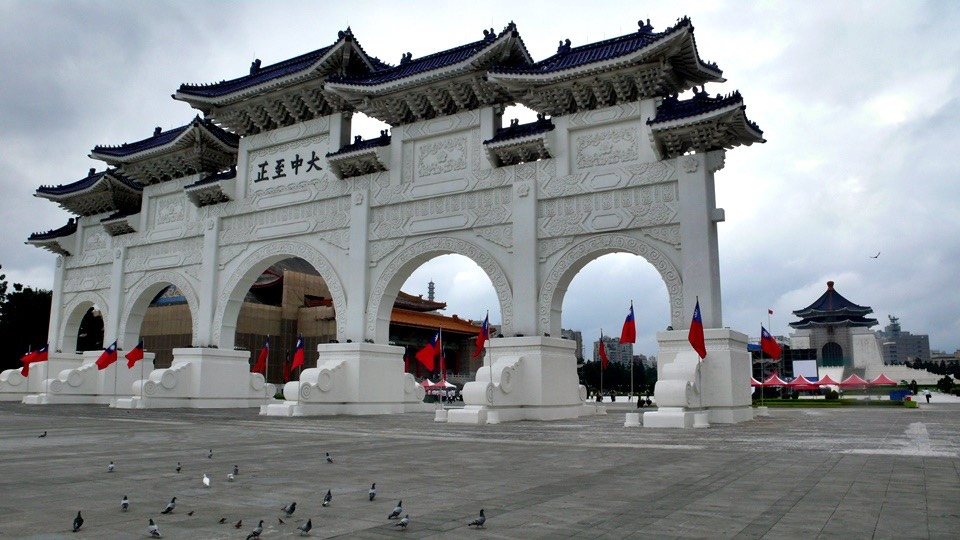
騎在台北市的街頭，有一點感觸，不知道自行車騎士該騎在哪邊呢？
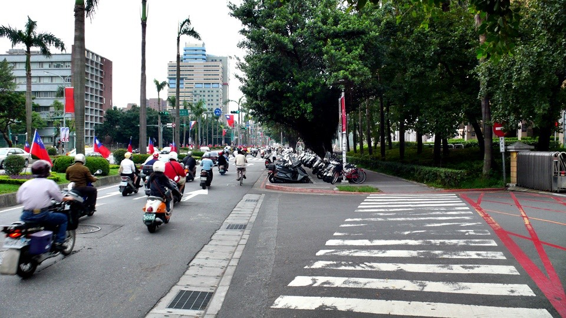
人行道禁止自行車，一般道路汽機車數量超多，又沒有單車專用道，在台灣的大都會騎車很心酸，根本就不被重視。
騎車的危險性很高，政府一點措施也沒有，只會一昧的開罰，當然，當到高官的人、制定這些法律的人，都是不會騎自行車的。
這些官員怎麼會懂小老百姓的心聲呢？
這趟BTP的旅行，走過幾個國家，比台灣先進的、落後的都有，這些國家的都市交通跟台灣最大的差別在於...
要猜猜看嗎？
不是單車專用道啦，落後的國家也沒有這種東西，也不是空氣品質，或是紅綠燈數量，答案是這個：
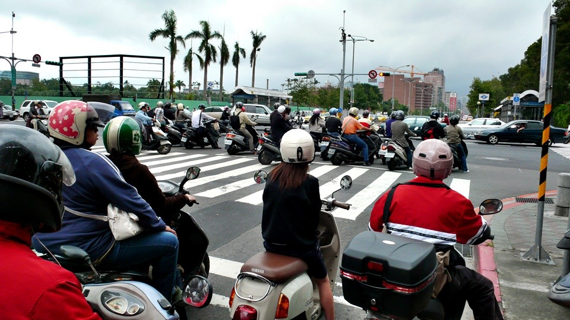
機車。
台灣的機車數量好多～好多～好多～
因為機車騎起來很靈活，所以很多駕駛都會亂鑽，但是速度比起汽車一點也遜色，到處橫行的機車會帶給自行車騎士很大的心理壓迫感。
這壓迫感遠遠大於汽車，從家裡一出發我就覺得整個人心神不寧，有種莫名的恐慌感。
一開始不知道問題出在哪，等到想通的時候整個人恍然大悟，可是一樣還是覺得很不自在。
我一直覺得路上之所以會有那麼多汽車或是機車，是因為大眾運輸作的不好所導致的，逼的大家只好自己開車上路。
先進國家的做法是鼓勵大家多搭乘大眾運輸，用優惠的票價來補貼民眾，而提高油價或是停車費等，來抑止汽機車的數量。
希望我有生之年可以看到台灣市區的道路，騎自行車的民眾會比騎機車的還多....這好像比登陸火星還要困難。
快要離開台北市的時候，看見台北101，最頂端被低矮的雲層給遮蔽，天空一點也沒有放晴的跡象，反到開始落起了小雨滴。
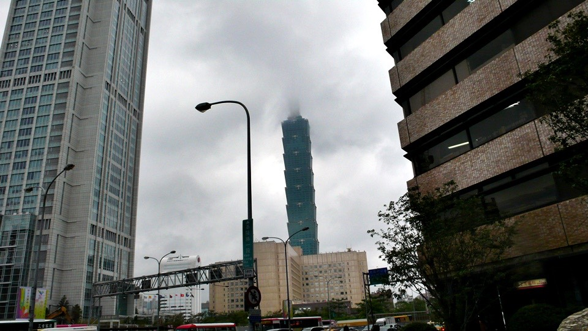
憑著記憶很順利的就騎上往基隆的路，連一點點迷路或是猶疑都沒有，也許環島不會迷路的那麼悽慘了吧，心中默默的期盼著。
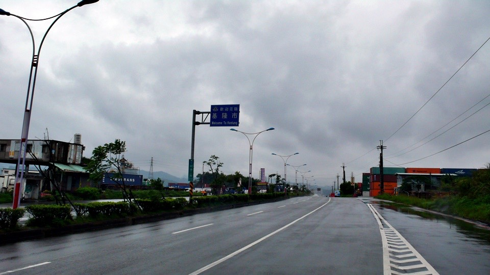
可惜只有剛出發的這一小段嚐到甜頭，等進入基隆之後，為了找通往北海岸的濱海公路，在市區繞了好幾個圈子。
到了新竹也是，拖著一身疲憊正想要回家休息，卻搞不清楚路該怎麼走，嘆氣加無言呀。
這條路是往基隆的必經之路，底下則是基隆河(應該是吧)，天空不斷的落下細小的雨滴，影響不是很大，不至於會整個人濕搭搭。
台灣到處都有便利商店，裡面隨便就可以買到一件垃圾袋雨衣，就算沒帶雨衣出門我也覺得沒什麼大不了的，就放給它淋不打緊。
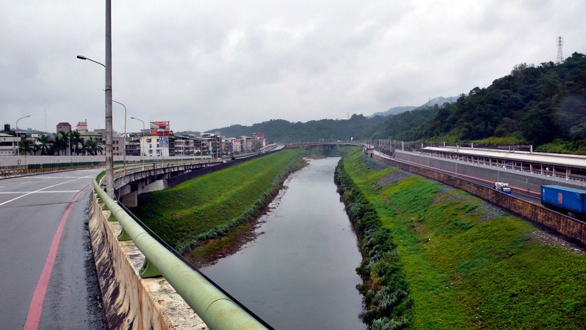
這一條確定就是基隆河，河水不多、河面也很窄，基隆的重點在於靠海，河流則沒什麼地位。國慶剛過，一路上旗海飄揚。
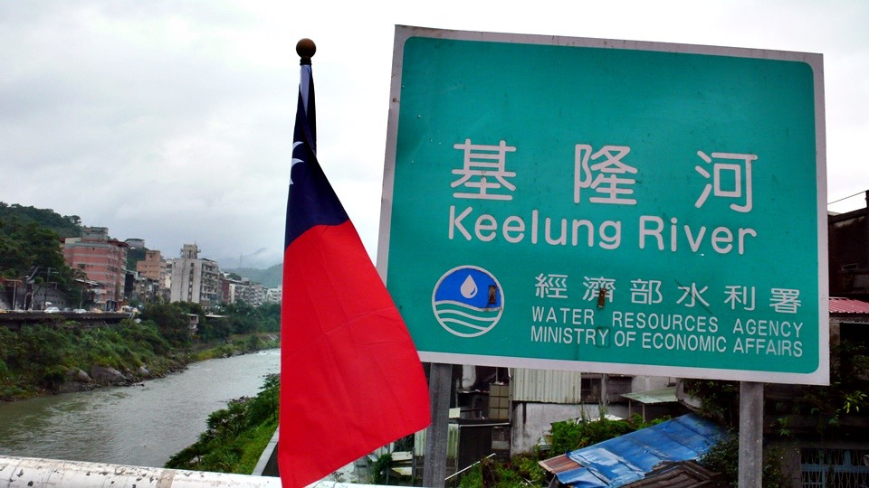
輕輕鬆鬆的騎了四十公里的路，抵達基隆廟口，跟上次來的時候又有點不一樣，攤位規劃得更好了，小販賣的東西一目了然。
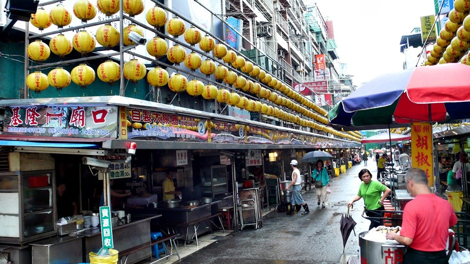
本來是打算吃三個營養三明治，可是居然還沒開始賣，讓我很傷心，都已經十點多了，也該營業了吧～老闆。
肚子咕嚕咕嚕的叫，每一間店看起來都好好吃，一時很難下決定。
最後選了這一間，老闆娘看我騎腳踏車來吃飯，問我從那邊來？新莊騎到基隆要騎多遠？以及～要吃什麼？
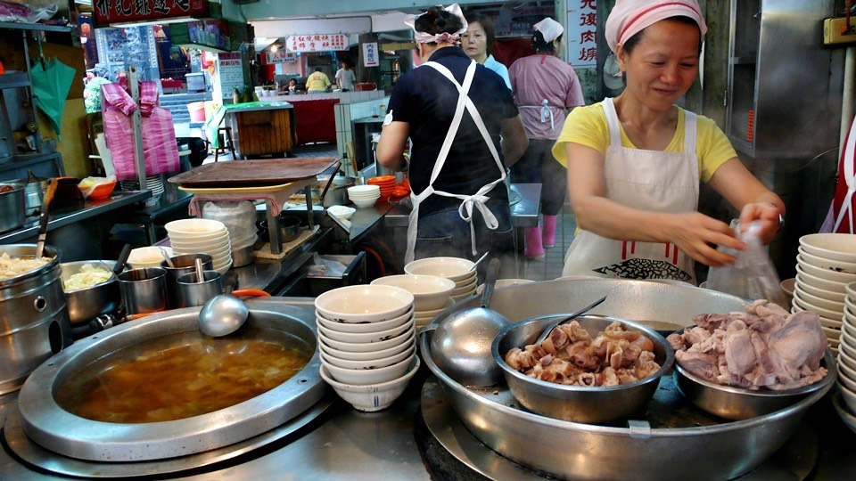
吃了一碗超美味的肉羹湯配兩碗滷肉飯，外加一粒滷蛋，這些都是人在國外時朝思暮想的台灣美食，便宜又好吃！
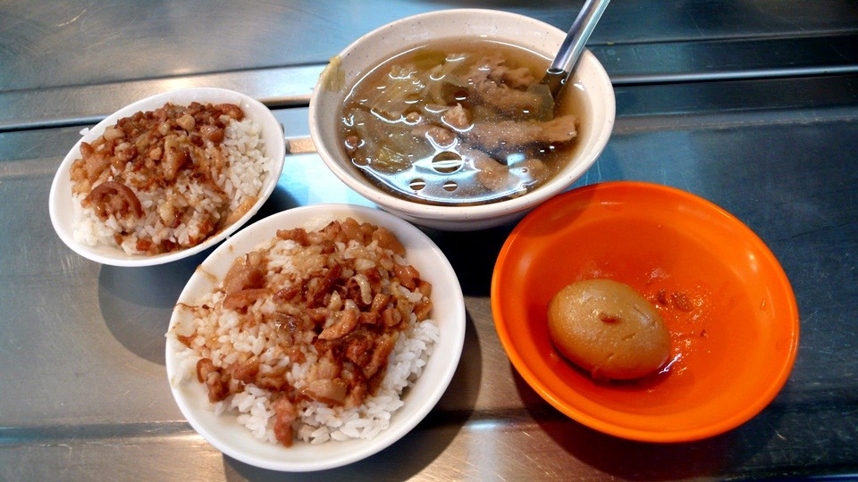
看著滷肉飯上面淋著的肉燥，肥肉瘦肉搭配的剛剛好，這時候拿一塊牛排跟我換滷肉飯我也不要換。
本來以為可能會被認出來，因為穿的衣服完全沒有改變，結果真的是我想太多，根本沒人知道我是誰。
開開心心的吃完飯，老闆娘說還是年輕人好，可以一個人自由自在的去環島，趁著年輕有體力，做些傻事的確比較容易，也比較有衝勁。
本來想細細的品味這頓美食，結果不到一分鐘就全部一掃而空，這家的滷肉飯我應該可以吃個二十碗～三十碗沒有問題。
從家裡騎車到基隆是小意思，但是從基隆要騎到北海岸就不知道該怎麼走了，最簡單的方法就是問當地人。
老闆說路口右轉直直走就可以到，很簡單。
聽著老闆的話，路口右轉，十五分鐘之後，我繞了一圈又騎回基隆廟口...真是神奇，明明路標就寫著『金山、萬里』怎麼會通不到呢？
在基隆市繞呀繞的，騎到了火車站。
火車站的前面就是港口，這邊的船運比起地面交通還要繁忙，偶爾也會看見軍艦停泊在此。
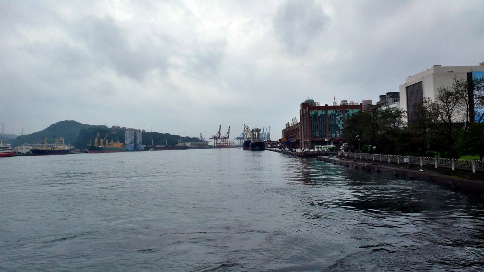
搞不清楚這邊是不是基隆河的出海口，左邊的山頭上用英文掛著基隆，那裡就是火車站的方向，可是北海岸究竟該怎麼去呀？
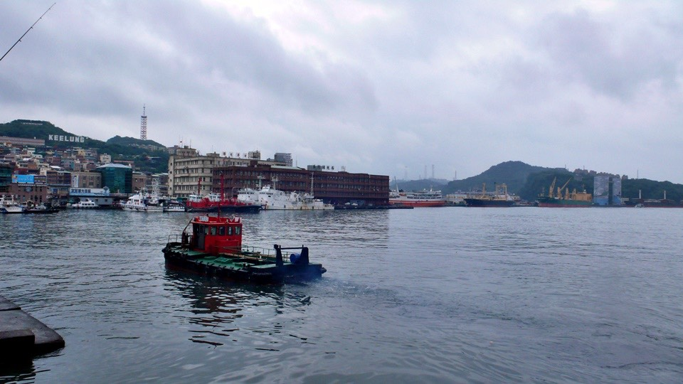
跟著告示牌走會騎回原點，這次環島沒有帶地圖，一切隨緣，實在覺得很傷腦筋時，就問路人。
要是在語言不通的國家，我就會用手指一個方向，然後說出我要去的地方，這樣聽起來很遜，但卻是全世界通用的手語，辨識度百分之百。
現在我在自己的國家旅行，語言溝通零障礙，問好了路之後，時間都快中午了，距離天黑還有不到六個小時。
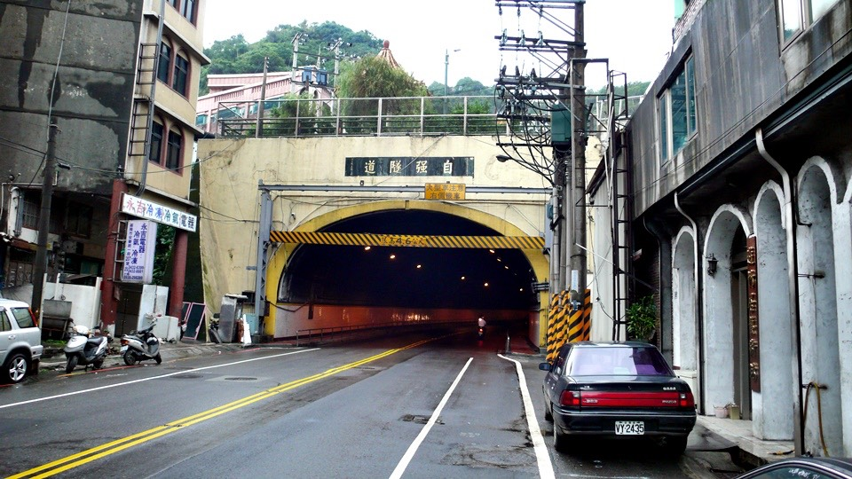
今天要騎完整個北海岸，然後再騎到新竹，我以為差不多一百公里出頭，實際上是差很多-.-||
過了這一個長長的自強隧道，終於看見北海岸的指示牌，心中大喜！
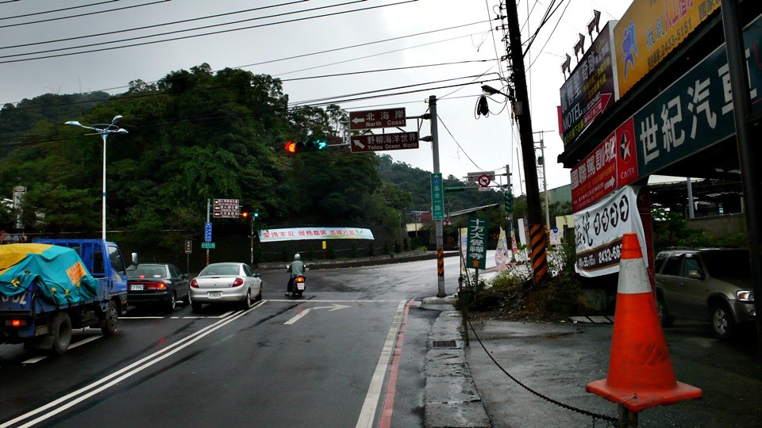
照片的右邊，有一個比人還高大的巨無霸三角錐放在地上，其實只是視覺錯誤而已，事實上它並不是放在地上，而是近在眼前。
騎在北海岸的路上，專業一點可以稱為台二線，沒兩下子就看到了海景，貨真價實的海。
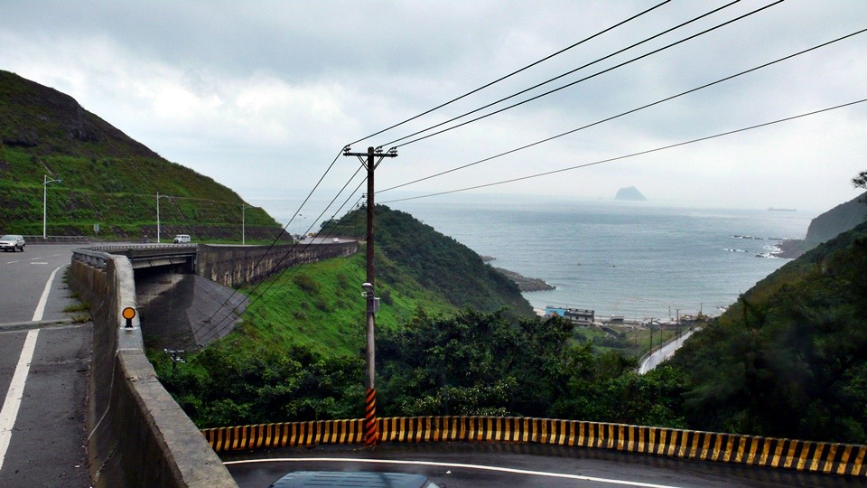
迷濛的天候，遠方的海上有一座小島，那是基隆嶼，海邊都是小山，沒什麼腹地，沿著海岸開闢的路就是濱海公路啦。

景色很漂亮，可以看著沙灘、石頭或是削波塊構成的海岸，越往北海岸騎，雨勢就越大，這時候想到要買雨衣來穿，剛好找不到便利商店。
等便利商店出現的時候，身上已經濕得到處都在滴水，穿雨衣也沒多大意義。
還好天氣不冷，氣溫依然還有二十幾度，雖然全身濕搭搭，但是不覺得冷，還有一種莫名的溫暖感覺。
沿著海岸線開闢的道路景色真是一流，就算今天不是藍天白雲艷陽高照的好天氣，依然可以欣賞到美麗的景色。
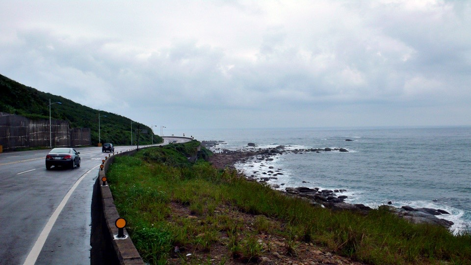
除了基隆嶼之外，濱海公路往宜蘭的方向還可以看見龜山島，那段路上的某一個角度看過去才會像烏龜的樣子。
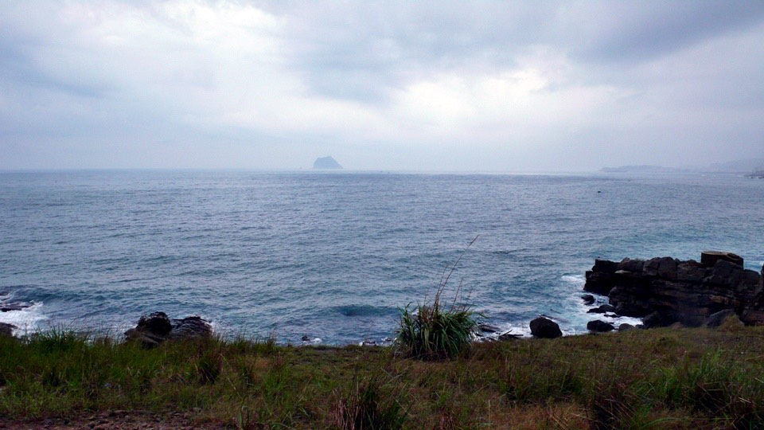
天候雖然不佳，但依然有人在海邊穿著全套的雨衣釣魚，毅力驚人。
東北季風的季節，風勢很強，往南騎都可以算是順風，騎起來蠻輕鬆的，海上的浪花很大，拍打在石頭上都會泛起好高的水花。

不論海浪再大，鹹鹹的海水都不至於打到我身上來，下個不停的雨水則已經讓我濕的非常徹底。
所以路上駛過的車輛濺起路邊積水噴的我一身的時候，已經沒什麼好在意。
停在路邊往沙灘看去，滿地的垃圾實在令人搖頭嘆氣。
想到之前在電視上看到台灣海邊的寄居蟹，背的不是貝殼，而是各式各樣人類丟棄的垃圾容器，配上這個畫面，人類虧欠大自然實在太多。
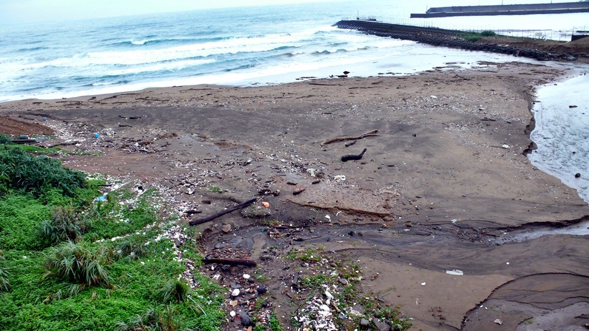
從基隆開始，沿路會經過萬里、金山、野柳、三芝，這些大家耳熟能詳的地名。
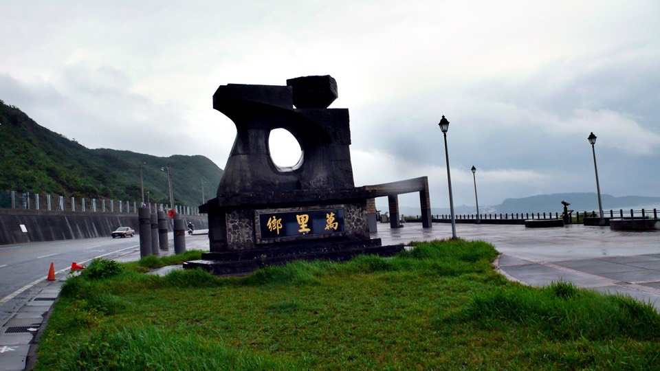
萬里很多衝浪的店家，很久以前我也來過一次，雖然很有趣，但發現自己沒什麼衝浪的天份。
今天不是好天氣，海邊還是看到很多黑黑的小點，難道還是有人在衝浪嗎？
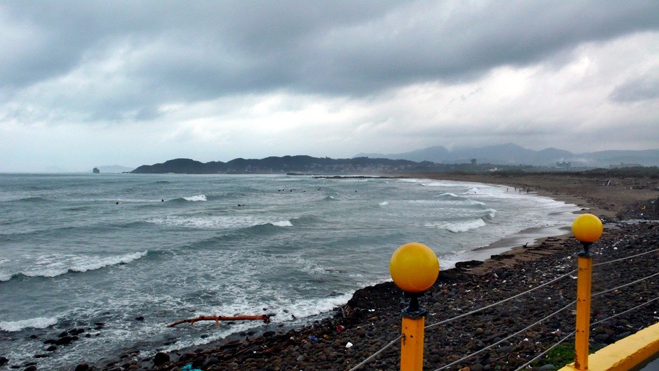
趴在欄杆上看著這些不畏風寒的人，你們實在太厲害了。
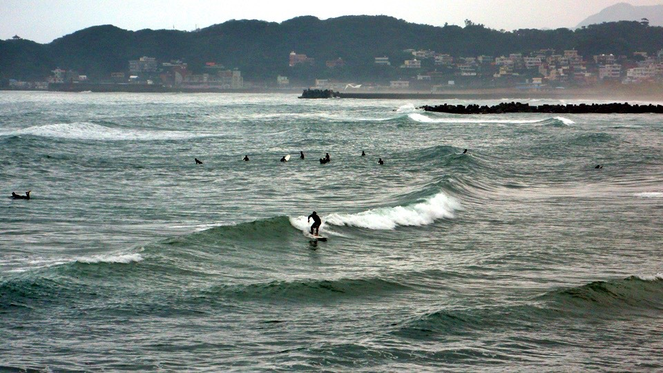
每個人如果都可以找到一個自己喜歡的運動，不論是什麼運動都好，休閒時可以讓自己流流汗，對身體健康也有幫助，這真是一件很幸福的事情。
結束BTP之後，運動量瞬間幾乎歸零，食量依舊很大，胃口可不會自己縮小，結果短短一個月，體重又增加了好幾公斤。
趁這次環島看能不能瘦一點回來。
不知道是不是太久沒有騎自行車了，騎得我屁股超級痛的，簡直沒辦法讓屁股停留在椅子上，痛到要站著才有辦法騎。
而且這種痛法是前所未有的，也不像是晚上睡一覺之後就會自然恢復的那種疼痛。
希望過兩天就會習慣，不然環島完屁股也爛掉了，唉～這可是美女騎過的單車，怎麼我無福享受呢。
一瞬間雨勢變超大，大雨傾盆而下，一時也找不到躲雨的地方，趕緊將包包的防水袋給罩起來，
但效果不大，行李中的乾衣服和其他東西都沾上了水氣，相當傷腦筋，才第一天而已就是落湯雞狀態，還好今天會有個安穩的落腳處。
衣服濕了、髒了就拿去洗乾淨，晚上可以沖熱水澡、睡舒服的床，現在雖然很悽慘，但只要有辦法騎到新竹那就可以把一切都扭轉回來。
大雨之中終於出現了公車等候站，在國外我常會睡在這邊，北海岸的公車站完全不能睡人，因為屋簷太短了，根本擋不住雨水。
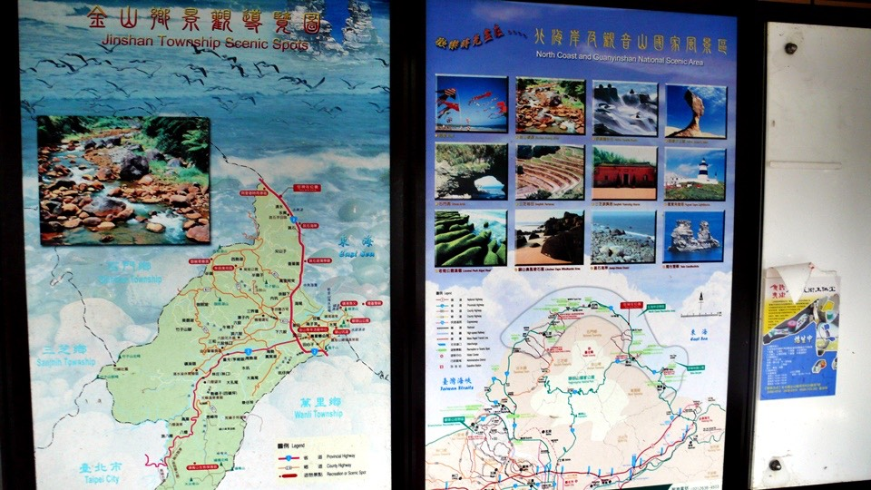
裡面跟外面一樣濕的公車站，掛著幾幅地圖和有用的資訊，沒有語言隔閡的旅行真是很方便，問路、點菜、看地圖都是易如反掌。
下雨的時候才發現這輛車跟小多有一個差異，就是它沒有擋泥板，輪胎旋轉的離心力不停的飛濺出夾帶有泥沙的水花。
穿著短褲的我，兩隻腳全都沾滿了顆粒大小不等的泥沙，乾了之後皮膚摸起來就像砂紙一樣粗。
沒有擋泥板的車呀...想到四年前環島的那輛車也是沒有擋泥板，那時候騎在南迴，也是颱風剛走，衝刺的下坡路段速度不斷飆升，
連帶的是髒水不停的噴到臉上、腳上、衣服，所有你想得到的地方無一倖免，當時的我就完全不以為意，還是騎的很開心。
看來我整個就是天生不怕髒的那種人。
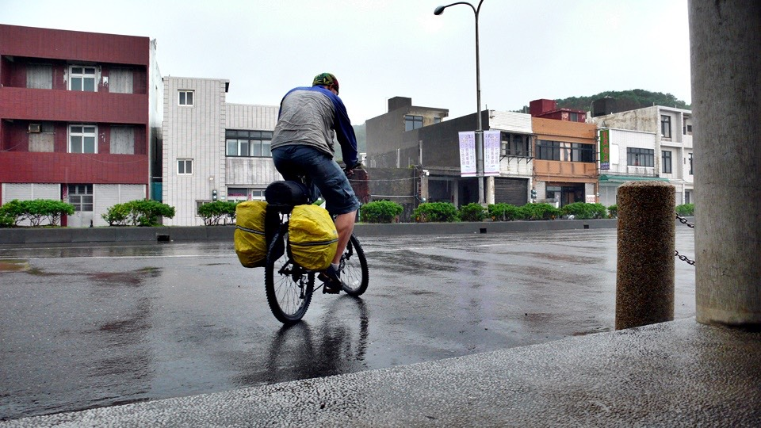
罩著防水袋的包包裡面已經溼透了，我全身也是從頭巾一路濕到襪子，好個環島第一天，抱持著郊遊的心態果然太看輕這趟旅行。
沿著北海岸騎車，因為雨勢飄渺，相機索性就收起來不拍照，沿路經過一些在淡水唸書時熟悉的景點，像是賣肉粽的十八王公。
之後也經過以前唸書的母校，可惜校名已經改了，很沒有當初的親切感，學校週邊的便當店跟十年前一模一樣，但是漫畫店卻倒閉了。
騎單車從新莊到淡水上學，是我第一次長距離騎車，也奠定了之後騎自行車旅行的基礎。
我一直覺得騎自行車是不會累的，是真的不會累，可能屁股會痛、手會痠，但整體來說，騎車對我而言是不會累的。
就這麼愛上了騎車，跨上鐵馬，以自己的步調展開一個又一個的旅行，直到我老了騎不動為止。
在淡水某個地方拍的照片，五顏六色像飛碟般的建築物，損壞的情況蠻嚴重的，不是荒廢就是崩裂。
看起來當初應該是想蓋成海景小房子，結果大眾不買帳吧。
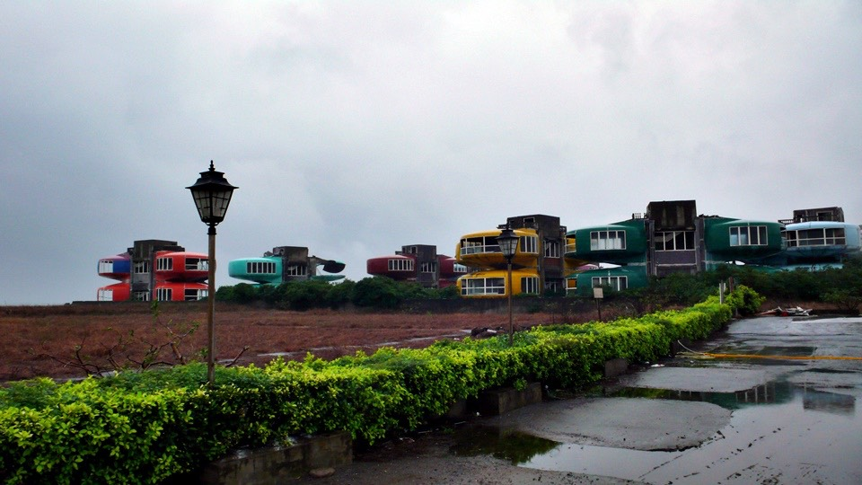
以前在淡水唸書，冬天幾乎天天在下雨，而且雨只下在學校的正上方，下課回家只要一離開學校的範圍，馬上放晴。
今天也是一樣，騎經過學校之後，北海岸陰霾的天氣嘎然而止，終於不再下雨了，身上濕搭搭的衣服開始風乾。
衣服從濕到滴水到完全乾燥，至少要兩～三個小時，落湯雞狀態漸漸解除。
騎到淡水之後，里程表就突破了一百公里，揉一揉眼睛以為自己看錯。
那從這邊騎到新竹不就要破兩百公里？比當初預估的還要遠，有點想從淡水就直接騎回新莊的家，環島第一天就變成北海岸一日遊。
可是想一想覺得很遜，所以還是硬著頭皮往新竹騎，估計晚上九點能夠抵達就算早到了。
淡水往新竹有條近路，叫做西濱公路，應該是西部濱海公路的簡稱，正式名稱則是台十五號。
從淡水騎到新竹大約八十公里，當時，我在考慮是要從淡水搭渡船到對岸八里，還是自己騎過關渡橋然後再繞回來。
搭渡船的話，人跟單車都要買票，而且河的兩岸有超多騎自行車的人在溜搭，這次環島還帶著一點躲貓貓的性質，還是避開一點好。
所以決定過橋，這樣一來里程數又要增加十幾公里，屁股已經痛到讓我咬牙切齒了。
加油站，真是一個可以信賴的好朋友，不論國內外都一樣，在這邊舒服的洗了把臉，照鏡子發現臉好髒。
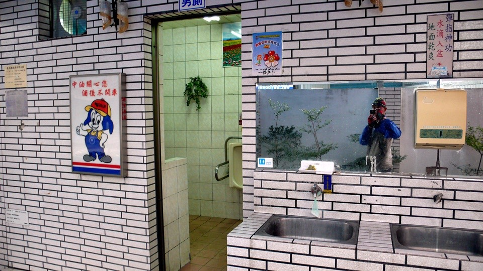
看到插頭之後習慣性的拿出電腦來充電，空空的水壺本來也想裝水來喝，哈薩克的水都能生飲了，台灣的應該OK吧？
一些在國外旅行的習慣帶到台灣來也蠻通用的，附帶一提，這次環島沒有住宿費的開銷，所以今天也會注意適合露營的地點。
人的眼睛是選擇性的忽略，對於一個喜歡自行車運動的人，看到路上有人在騎車的時候，不自覺都會多看兩眼。
反之，對自行車沒興趣的人，根本就不會被吸引到，完全從視線中自動忽略掉。
人只看得見自己想看的東西。
同樣的邏輯，舉凡像是空屋、警察局、消防隊、水龍頭、插座，彷彿都閃著光芒在吸引我的注意力。
看來在台灣露營是沒太大問題的，治安問題麻...看著辦囉～
一過關渡橋選擇走西濱公路而不是回新莊的家之後，這段路就沒得回頭了，一定要騎到新竹才有辦法洗澡休息，又是另一段漫長的路程。
環島的路線選擇很多，今天騎的路都是我沒騎過的，感覺非常新鮮有趣，居然還看到台北港的告示牌？
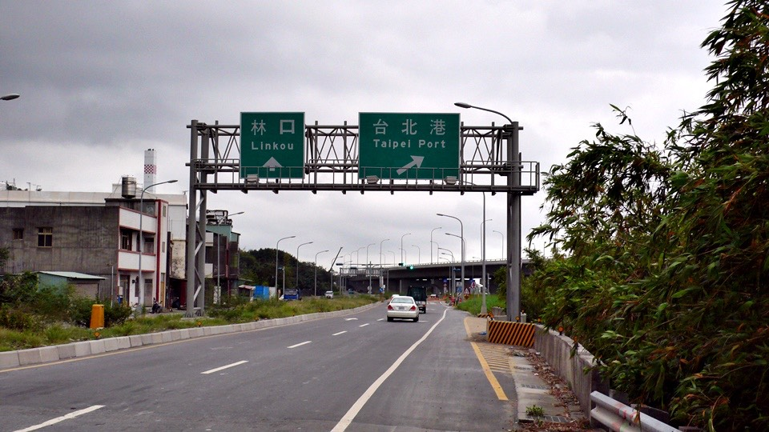
台北也有港口？我真是孤陋寡聞，這次環島看來又可以好好補充我對這塊土地的了解。
這棟四四方方的漂亮建築物，從外觀很難猜出它其實是垃圾焚化廠吧？
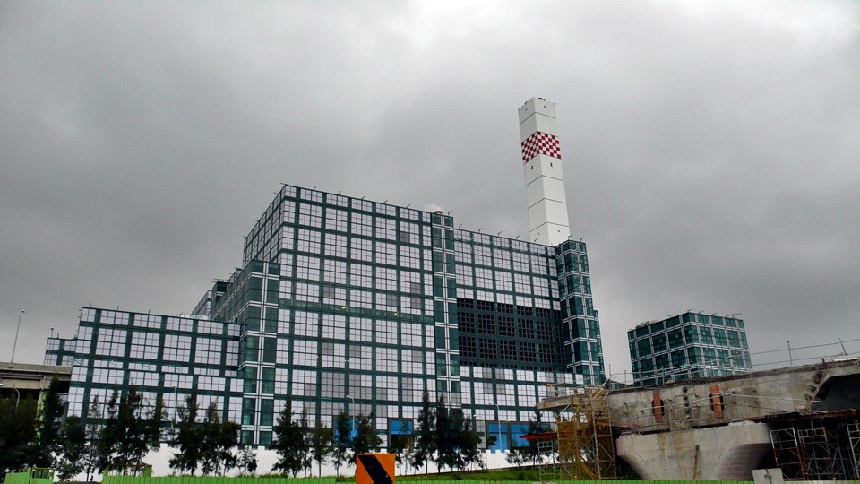
這一段路就是西濱了，大致上跟北海岸沒什麼差別，右邊是海，左邊是低矮的山。
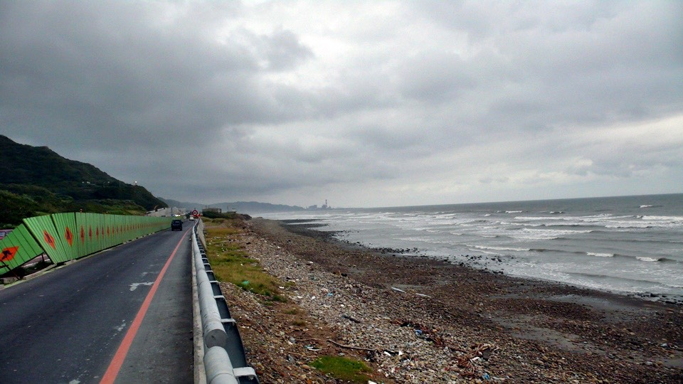
但是西濱比較沒有觀光的海岸，工業區倒是不少，而這個時候也快五點了，天色漸漸轉暗。
在屋子裡，燈火通明的情況下，天黑並沒有什麼影響，但是在外頭騎車，天一黑視線馬上就變得不清楚，而且五點多就天黑實在太早了。
在莫斯科的時候最高紀錄是晚上十二點才黃昏，白天可以騎車的時間非常的長，就連最後段到了法國，也是八點左右才天黑。
現在日光時間大幅縮短，如果想看清路面騎車的話，早起出發是免不了的。
雨勢停了之後，身上的衣服一點一點的風乾，唯一不會乾的就是雙腳，因為襪子非常吸水。
脫掉襪子跟睡墊綁在一起吹風，光腳丫穿鞋子，想說這樣會通風很多，但依舊濕濕的很不舒適。
就這麼碰巧，藍白拖沒有帶在行李中，要到新竹家裡才有辦法拿到拖鞋，依然是那一雙被Peter的小狗咬了幾口的那一雙BTP紀念版。
腳包著濕搭搭的襪子，兩隻腳丫都泡的發白起皺折，這樣的狀態已經持續了好幾個小時。
鞋子濕搭搭，又沒拖鞋可以換，那該怎麼辦呢？
靈機一動決定赤腳騎看看，脫下左腳的鞋子掛在手把，赤腳踩踏版的感覺真是令人痛徹心扉。
踏板上尖尖突起的鋼釘刺著腳底板，雖然不至於會流血，但每用力採下踏板，腳底就像踩在針山上似的難受。
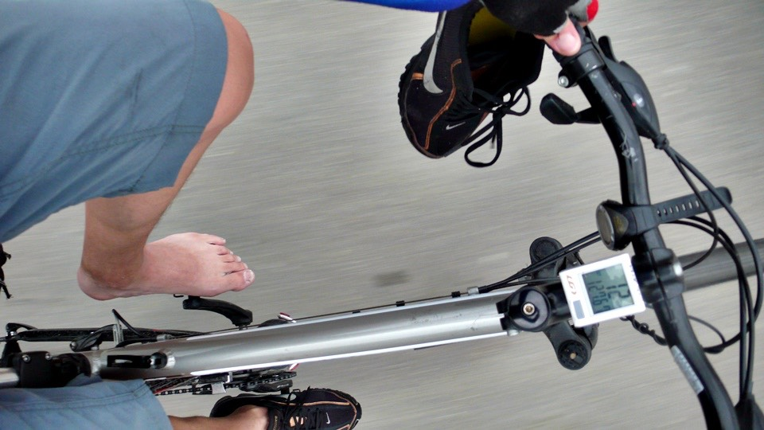
還好我只先脫左腳測試看看，沒有一口氣就光腳丫騎車，就這麼穿一隻鞋子兼赤腳騎了半個小時，認定這是一個蠢主意，
繼續騎下去腳會廢掉，但是穿著濕鞋子騎車真的很不舒服，身上都乾的差不多了，惟獨雙腳依舊潮濕。
越是在意濕腳丫的事就越難把注意力從它身上轉移開，同時因為天色漸漸漆黑，如果雙腳的問題不想辦法解決的話，實在會騎的很不爽。
穿鞋子騎也不是、脫鞋子騎也不好，旅行真是什麼樣奇怪的問題都會遇到，發現問題跟解決問題連帶會獲取經驗和成就感。
特別是一個人旅行的時候，因為沒有人可以依靠，所以不論是雞毛蒜皮的小事，或是火燒眉毛的大事，通通要自己想辦法。
解決濕搭搭的鞋子的方法就是這樣啦，脫掉鞋子果然是不二的選擇，那既然光腳踩踏板會很痛，那就踩在鞋子上就不會痛啦～
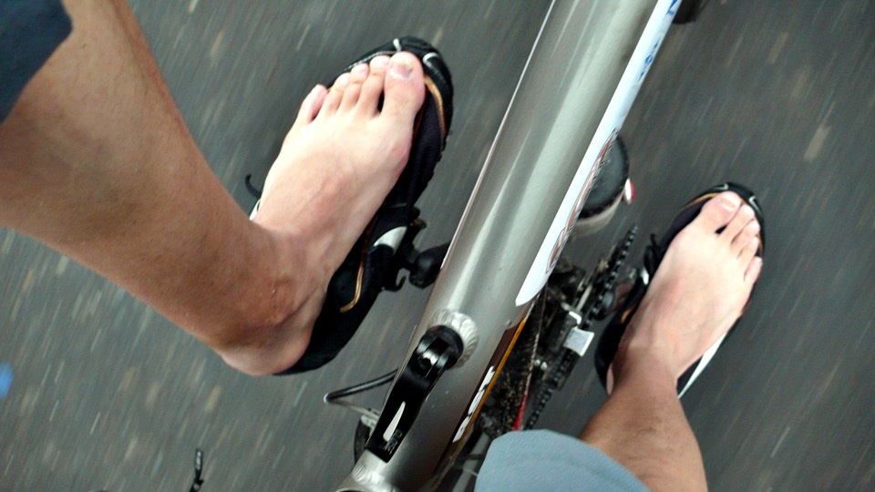
同時又可以通風，兼顧衛生和騎車效率，還好有想到這一招，不然一路騎到新竹，腳都泡爛了，整雙鞋子味道肯定也很難聞。
一路跟著台十五號的標示騎，看到新竹只有五十公里的時候心情很好，沒有想像的那麼遙不可及，晚上九點抵達是很有機會的。
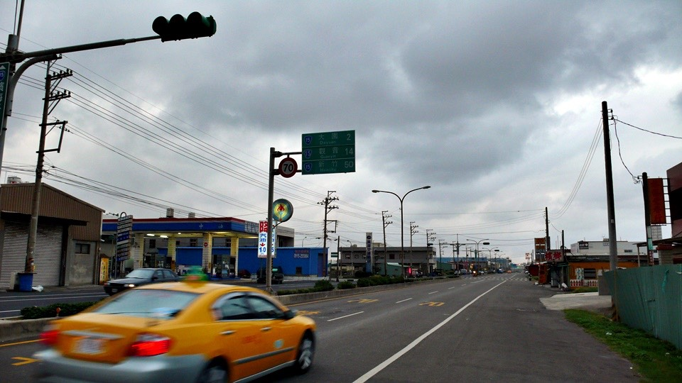
只要在新竹市區不迷路的話。
天色很快的就漆黑一片，騎在西濱上，一路經過了林口、觀音、新屋、新豐、竹北我都不知道景色有什麼？
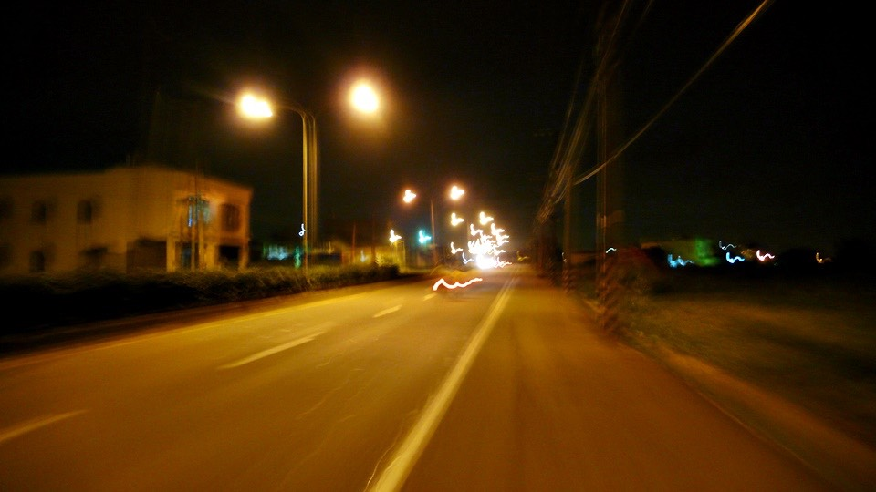
路燈時有時無，有房舍的地方才會開路燈，空曠的道路上就算有裝設路燈也是不開放的，漆黑的天色騎在漆黑的路面，
看見遠方有燈的時候就特別安心，一路默默的騎，從南寮漁港進入新竹市，往東邊進近市區，稍微迷路一下之後就找到了回家的路。
看著碼表果然如預計的超過兩百公里，一百多天的BTP騎下來，單日里程超過兩百公里的也沒幾天，沒想到環島第一天就這麼累。
回到家馬上去沖個舒服的熱水澡，衣服全部丟去洗衣機洗，也許這是這次環島唯一一次能將衣服洗乾淨的時候了，要好好珍惜。
米莎莎在新竹等我，飢腸轆轆的肚子，塞滿了她自己煮的料理，整個人一放鬆，全身痠痛的部位馬上浮現。
首先最明顯的是屁股，整個痛到爆，我連坐下來吃飯都沒辦法，一定要站著吃，晚上肯定也要趴著睡，明天不知道有沒有辦法重新跨上座騎？
再來就是手臂跟小腿，也許是換車了還騎不習慣，這兩個地方也是異常的酸痛，肌樂不用錢似的狂噴，默默祈禱明天情況會好轉。
BTP結束之後，環島開始了～我希望這是一個輕鬆、愉快、可以去探望上次環島所認識的好朋友的旅行。
同時，附帶一點躲貓貓的遊戲成分，來呀～來堵我呀 XD
繼續閱讀：10.13 離家出走
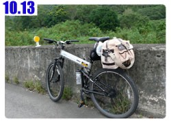